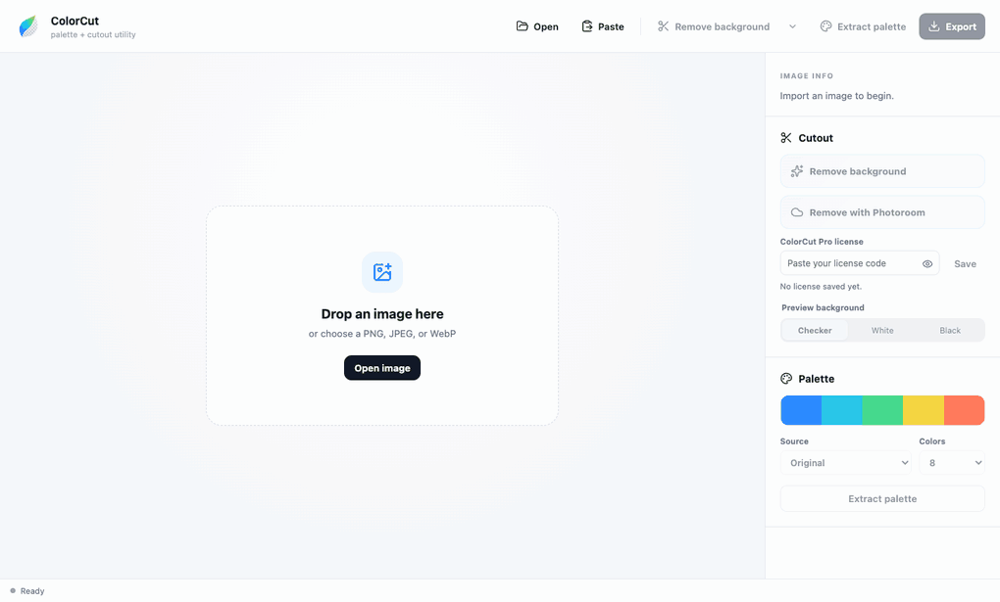

Utilitário de recorte + paleta para macOS
Tire o fundo. Fique com as cores.
O ColorCut remove o fundo de fotos e extrai paletas prontas para usar — tudo processado no seu Mac, sem enviar nenhuma imagem para a nuvem.

Em movimento
Do arquivo à paleta em segundos
Abra uma imagem, remova o fundo, compare com o slider e extraia a paleta do assunto recortado.
- 1Abrir
- 2Remover fundo
- 3Comparar
- 4Extrair paleta

Feito para duas tarefas
Pequeno, preciso e rápido
Nada de editor genérico.
Compare sem sair da janela
Paleta do original ou do assunto
Valores técnicos prontos
Exportações úteis
Abrir, colar ou arrastar
Antes e depois
Resultados reais do recorte local
Extração de paleta
Cores que realmente estão na imagem
Clique numa cor para copiar o HEX
Por dentro do app
Uma janela, tudo à mão
Capturas da interface real do ColorCut 1.0.
Como funciona
Três passos
- 1
- 2
- 3
Privacidade
Suas imagens ficam no seu Mac
Opcional

Local (grátis)

Photoroom (Pro)
ColorCut Pro
Dúvidas